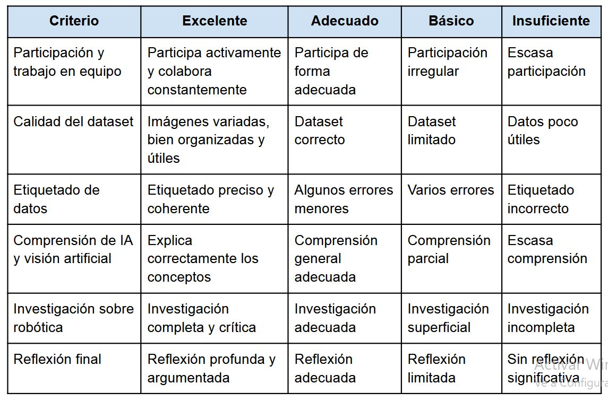

Rúbrica y diana
Rúbrica

Diana
Diana de autoevaluación
El alumnado valorará del 1 al 5 los siguientes aspectos:
● He participado activamente en mi grupo
● He comprendido cómo funciona el entrenamiento de modelos de IA
● He colaborado con mis compañeros/as
● He utilizado correctamente las herramientas digitales
● He comprendido la importancia de los datos en IA
● He reflexionado sobre el impacto medioambiental
● He aportado ideas al proyecto
● Me he sentido implicado/a en la actividad
Detalle:
Instrumento 1: Rúbrica analítica del proyecto
Descripción
Se utilizará una rúbrica analítica digital para evaluar el desarrollo global del
proyecto. Esta rúbrica será compartida con el alumnado desde el inicio de la
actividad para favorecer la transparencia y la comprensión de los criterios de
evaluación.
La rúbrica se aplicará principalmente en:
● El trabajo cooperativo
● La calidad del dataset generado
● La participación en el proceso de etiquetado
● La comprensión básica del funcionamiento de los modelos de visión artificial
● La investigación sobre robótica aplicada
● La presentación y reflexión final
La herramienta podrá elaborarse mediante Google Classroom, CoRubrics o
formularios digitales.
Qué se evaluará
La rúbrica permitirá evaluar:
● Participación activa
● Organización y colaboración dentro del grupo
● Calidad y coherencia de las imágenes recogidas
● Correcto etiquetado de los datos
● Comprensión conceptual del reentrenamiento de modelos
● Capacidad crítica sobre el uso de IA y robótica
● Reflexión final sobre el aprendizaje realizado
Otención y tratamiento de datos
Los datos obtenidos permitirán detectar:
● Diferencias de implicación entre grupos
● Nivel de comprensión técnica
● Dificultades organizativas
● Evolución del alumnado durante el proyecto
La información se analizará comparando:
● Resultados grupales
● Observaciones del docente
● Autoevaluaciones del alumnado
Esto permitirá ajustar futuras implementaciones y detectar posibles desigualdades
en la participación.
Instrumento 2: Diana de autoevaluación
Descripción
Se utilizará una diana de autoevaluación digital al finalizar determinadas fases del
proyecto, especialmente:
● Tras la salida de recogida de datos
● Tras el proceso de etiquetado
● Al finalizar el proyecto
La finalidad será fomentar la reflexión del alumnado sobre su propio aprendizaje y
participación.
La diana podrá elaborarse mediante Canva, Genially o formularios interactivos.
Qué se evaluará
El alumnado valorará aspectos como:
● Nivel de participación
● Comprensión de los contenidos
● Capacidad de trabajo en equipo
● Organización personal
● Uso de herramientas digitales
● Interés e implicación
● Comprensión del impacto de la IA en problemas reales
Obtención y tratamiento de datos
Los datos permitirán identificar:
● Diferencias entre percepción del alumnado y evaluación docente
● Problemas de motivación
● Necesidades de apoyo
● Percepción de dificultad de las tareas
Estos resultados no se utilizarán únicamente para calificar, sino también para
mejorar la práctica docente y adaptar futuras actividades.
Además, la comparación entre autoevaluación y rúbrica favorecerá procesos de
triangulación de datos.
● Resultados de la rúbrica
● Autoevaluaciones
● Producto final generado
De este modo, se aplicará una evaluación más completa y ajustada a la realidad del proceso de aprendizaje.